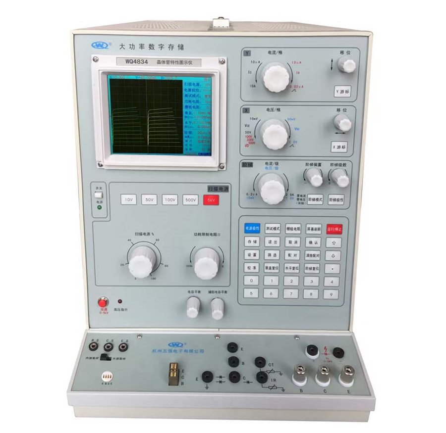

WQ4835
大功率数字存储晶体管特性图示仪 High power digital storage curve tracer
面向大功率器件测试：最大集电极电流 200 A，扫描电源可输出 10 V / 200 A，二极管反向耐压测试至 5000 V。阶梯电流 0.2 μA/级 ~ 2.0 A/级共 22 档，阶梯偏置 ±1 级连续可调，便于观察器件在完整工作区间的行为。 Built for power devices: 200 A maximum collector current, a sweep supply reaching 10 V at 200 A, and diode breakdown testing to 5000 V. Step current spans 0.2 µA to 2.0 A per step in 22 ranges, with continuous ±1 step offset.
- 集电极电压Collector voltage
- 10 mV/div ~ 50 V/div, max 500 V
- 反向耐压Reverse voltage
- 100 V/div ~ 500 V/div, max 5000 V
- 阶梯电压Step voltage
- 10 mV/step ~ 2 V/step, 8 ranges
- 最大功耗Power dissipation
- 400 W
- 外形与重量Dimensions
- 580 × 330 × 400 mm, approx. 29 kg
典型实测器件：E13005 三极管、IRFP064 场效应管、1N5408 整流二极管。 Devices measured in published examples: E13005 transistor, IRFP064 MOSFET, 1N5408 rectifier.